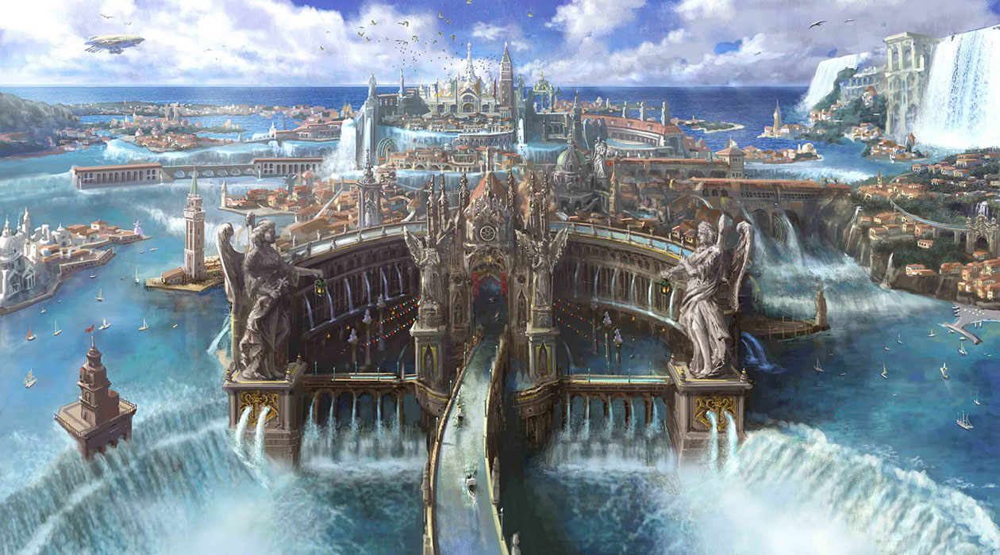
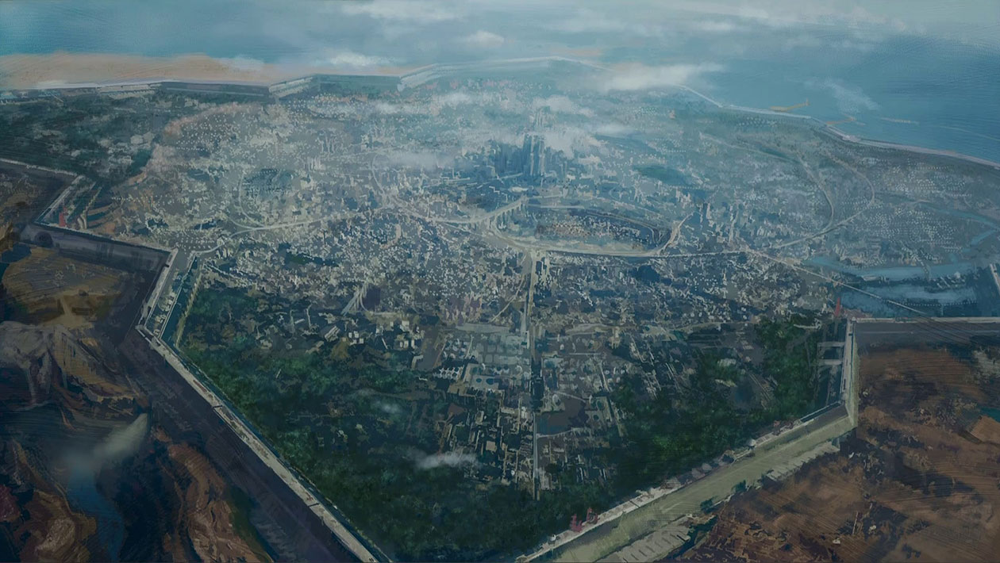
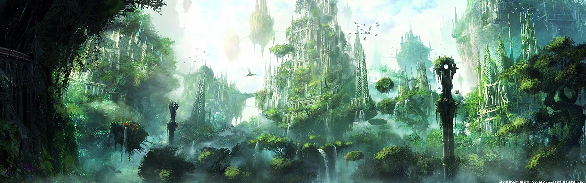
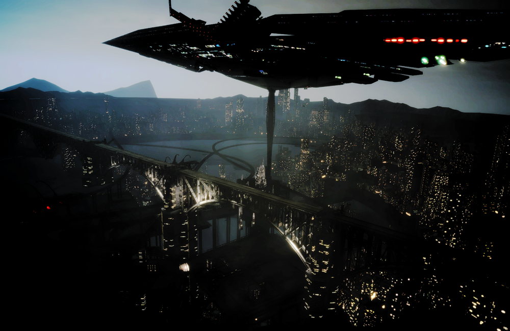
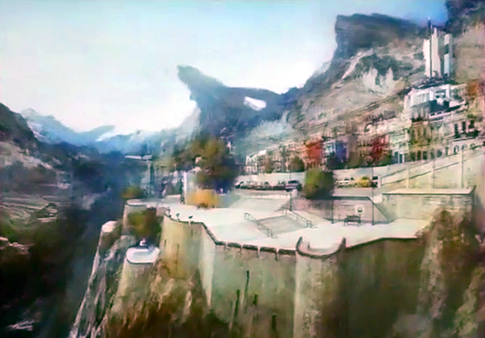

Who we Rate:
Diners
Noodle Wagons

Grocers
For the Food Lover and Traveling Adventurer
World Wide Community
Connect with Thousands across Eos!
Explore and Rate
With Tens of Twenty places to go why not visit them all?
Before the Eternal night falls upon us all.

Altissia
Learn More >

Insomnia
Learn More >

Tenebrae
Learn More >

Gralea
Learn More >
